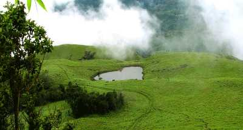
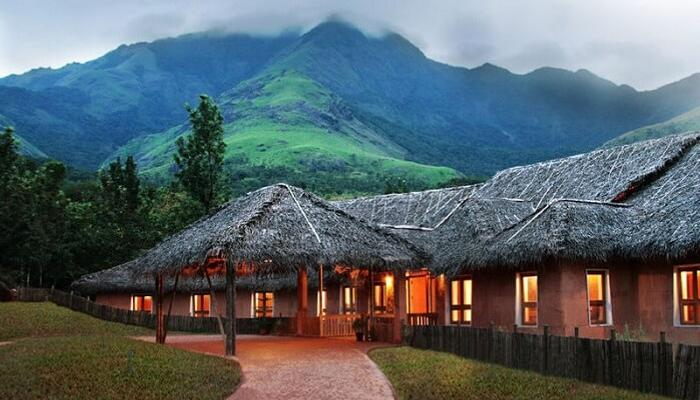

Chembra Peak
Located close to Meppady and just 8 km south of Kalpetta, stands the highest peak of the Wayanad Hill Range. The Chembra Peak at an altitude of 2000 meters above sea level. The Chembra peak offers a panoramic view of not only the entire Wayanad district but also a large chunk of Kozhikode, Malappuram and Niligiri districts.The peak, its surrounding lush greenery and the famed heart-shaped lake make it a paradise for travellers to explore.
Wildlife Sanctuary
Wayanad Wildlife Sanctuary is the second largest wildlife sanctuary in Kerala and comprises of rare as well as endangered species of both flora and fauna.It is surrounded by the protected areas of Mudumalai in Tamil Nadu as well as Nagarhole and Bandipur in Karnataka.The sanctuary is spread over an area of 345 square km and comprises of two parts namely Upper Wayanad and Lower Wayanad. Eucalyptus, as well as bamboo trees, are grown in the region.

Soochipara Falls
Also known as Sentinel Rock Waterfalls, Soochipara Falls is a three-tiered waterfall situated in Vellarimala, Wayanad.Surrounded by deciduous, evergreen and montane forests, this waterfall is regarded as one of the best waterfalls.The drive from Meppadi to Sentinel Rock Waterfalls provides visitors with scenic views of some of the best tea estates in Wayanad.

Vythiri Tourism
Vythiri is an ideal tourist destination with little cottages and resorts ornamenting its pleasant surroundings.It comprises of 18 villages.It is the place to be in if one wants to step back a little into the past and experience the simpler cottage life while having the urban and modern facilities available on demand to create a truly enjoyable experience.A popular resort town famous for its old world charm of cottages, log huts & tree house accommodations cosily nestled in the forests of Wayanad.
